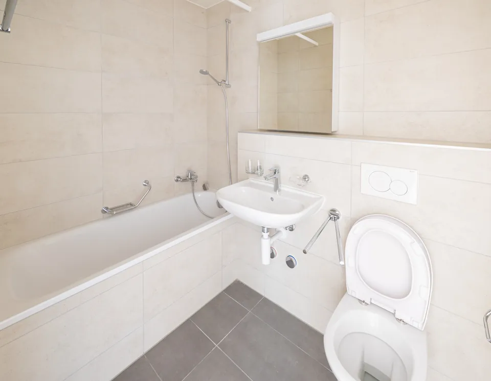

Appartement Beaulieu
- Surface
- 128 m²
- Durée
- 7 semaines
Appartements, maisons et immeubles livrés à Lausanne et sur l'arc lémanique, avec leur surface, leur durée et les travaux réalisés.

Réalisations
Cinq chantiers livrés
Pour chaque chantier : la surface, la durée et les travaux réalisés. Cliquez sur une photo pour l'agrandir.

Duplex sur deux niveaux repris intégralement, avec deux salles d'eau recarrelées du sol au plafond, plan de pose étudié avant la pose et reprise de l'ensemble des plafonds en faux plafond acoustique.


Villa des années quatre-vingt remise à niveau : dépose des papiers peints d'origine, ragréage des sols, pose de toile de verre peinte et création d'un faux plafond lumineux dans le séjour.

Aucun chantier ne correspond à ce filtre pour le moment.
À la une
Un immeuble habité
Chantier à la une
Reprise complète de six logements pour une régie lausannoise : plâtrerie, peinture, faux plafonds, carrelage et sols. Chantier mené étage par étage pour que les locataires restent chez eux, avec un nettoyage complet à la fin de chaque logement.

Familles
Ce que nous reprenons dans la région
Un appartement de Sous-Gare, une villa de Chailly et un immeuble locatif ne se rénovent pas de la même façon, ni pour les mêmes raisons.
Sous-Gare, Chauderon, le Vallon, la Cité
Hauts plafonds, parquets à lames, murs en plâtre sur lattis. On y gagne des volumes que le neuf ne sait plus produire, et on y trouve des surprises derrière chaque cloison. Le travail porte d'abord sur les supports : ce sont eux qui décident du résultat.
Chailly, Épalinges, Le Mont, Pully
Des maisons des années soixante-dix et quatre-vingt, très cloisonnées, avec des volumes fermés que l'époque appréciait. L'essentiel du chantier consiste à rouvrir, à éclaircir et à remplacer des revêtements qui ont quarante ans.
Toute l'agglomération lausannoise
Des remises en état entre deux locations, souvent logement par logement, dans un immeuble habité. La contrainte n'est pas technique, elle est calendaire : une date de fin de travaux ferme, calée sur l'entrée du locataire suivant.
Imprévus
Ce qu'on découvre en ouvrant
Dans un logement ancien, la dépose réserve toujours quelque chose. Les quatre cas ci-dessous reviennent sur un chantier lausannois sur deux.
Deux à trois centimètres d'écart sur dix mètres, courant dans les immeubles d'avant-guerre. Une mise à niveau (ragréage) règle la question, mais elle s'ajoute au devis si elle n'a pas été anticipée à la visite.
Sous un vieux linoléum, on trouve souvent des lames sur solives qui jouent. Un panneau de répartition devient nécessaire avant tout revêtement collé.
Fils sous tube métallique, absence de terre, tableau saturé. Nous ne sommes pas électriciens, mais nous le signalons et nous coordonnons l'intervention.
Porteur alors qu'il paraissait léger, ou l'inverse. Seule une vérification sur place tranche, et il vaut mieux le faire avant de vendre une ouverture.
Prochaine étape
Décrivez votre projet : nous vous dirons ce qu'il demande, combien de temps il prend et ce qu'il coûte.